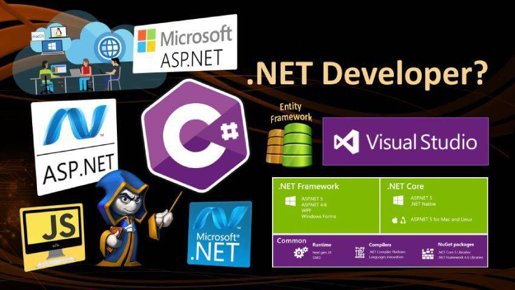

DotNet là gì?
DotNet là gì?
Dot Net (viết tắt .NET) là một nền tảng (Framework) cho phép lập trình viên sử dụng để phát triển các ứng dụng, website. Nền tảng này được phát triển bởi Microsoft nó chạy trên hệ điều hành Microsoft Window. Chú ý rằng .NET không phải là ngôn ngữ lập trình, mà là nền tảng cho phép các ngôn ngữ lập trình khác nhau như C# sử dụng để tạo nên các website, ứng dụng trên Internet.
Cấu tạo của .NET là một bộ các dòng code được viết sẵn bởi các lập trình viên Microsoft, các lập trình viên khác sử dụng nền tảng này để phát triển các ứng dụng và dịch vụ web khác một cách nhanh chóng hơn.
Các ngôn ngữ được sử dụng trên nền tảng .NET gồm có C#, VB.Net, .Net Core, .Net Famework, Xamarin/Mono, v.v… 
Lập trình viên .Net cần học những gì?
Với bài viết này, chúng tôi muốn mô tả những kiến thức cần thiết để bạn có thể trở thành một nhà phát triển .NET thành công. Trước khi nói về các kỹ năng bạn có có cho .NET, tôi muốn giải thích một điều bạn cần phải tuân theo và tập trung vào nó nếu muốn trở thành nhà phát triển .NET giỏi.
Điều đầu tiên là không ngừng học hỏi, đây là nhiệm vụ suốt đời. Bạn chỉ giỏi mọi thứ khi luôn học hỏi, chăm chỉ làm việc và có được các kinh nghiệm cần thiết cho sự nghiệp.
Điều thứ hai là về logic, phân tích, giải quyết vấn đề và tìm ra giải pháp tối ưu cho các vấn đề. Giải quyết các vấn đề là cách trực tiếp giúp phát triển các kỹ năng logic và phân tích của bạn. Nếu bạn có hai kỹ năng này, bạn gần như đủ điều kiện để trở thành một developer thành công.
1. Những điều bạn phải làm để nâng cao kỹ năng của mình trong .NET
– Chọn một trong các kỹ năng cụ thể trong .NET
– Nghiên cứu và tìm hiểu thông tin về kỹ năng bạn muốn phát triển, có thể tìm kiếm thông tin trên Internet, youtube .
– Khám phá cách thực hiện kỹ năng đã chọn
– Tự tạo và thực hiện dự án demo với kỹ năng bạn đã chọn.
– Tạo một dự án cơ bản và cố gắng thực hiện nó.
– Nếu thực hiện thành công, hãy thử thực hiện nó trong dự án thực của bạn nếu có thể.
– Khi bạn cảm thấy thông thạo kỹ năng đã chọn thì chuyển sang kỹ năng tiếp theo.
Làm điều đó cho đến khi bạn hoàn thành tất cả các kỹ năng cần thiết của .NET. Bây giờ, chúng tôi sẽ nói về các kỹ năng bạn cần có để trở thành nhà phát triển .NET.
Có nhiều kỹ năng bạn cần phải có để trở thành một nhà phát triển .NET thành công. Khi công nghệ đang phát triển từng ngày, chúng tôi đã chia các kỹ năng thành hai phần.
2. Kỹ năng cần thiết
– .NET Basics
– C#
– .NET
– .NET MVC
– SQL Server
– WCF
– Visual Studio
– JavaScript
– jQuery
– CSS
Cách trở thành lập trình viên .NET? Lương .NET bao nhiêu?
3. Các kiến thức liên quan hỗ trợ tốt cho kỹ năng
– Web API
– Entity Framework
– LINQ
– AngularJS
– NodeJS
Bây giờ, chỉ cần bắt đầu nghiên cứu và thực hành các kỹ năng đã chọn và đảm bảo thông thạo 1 kỹ năng nào đó cụ thể trước khi chuyển sang kỹ năng khác. III. Mức lương lập trình viên .NET
Đối với lập trình viên mới ra trường có thể nhận được mức lương từ 10 – 15 triệu
Những lập trình viên có kinh nghiệm từ 1 – 3 năm sẽ có mức lương cao hơn từ 18 đến 20 triệu tùy vào từng vị trí.
Khi đã có nhiều hơn 5 năm kinh nghiệm tùy theo lĩnh vực, vị trí mà mức lương sẽ khác nhau có thể đạt được con số hơn 35 triệu mỗi tháng.